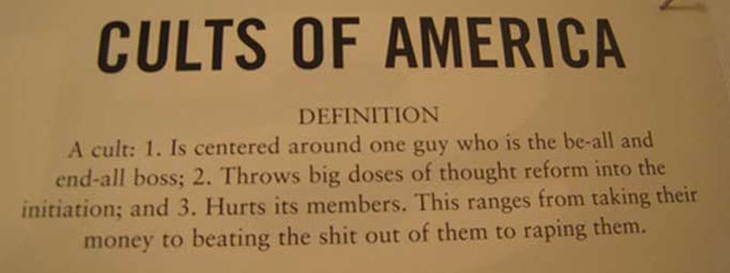

Common Misconceptions

Just as there are numerous characteristics and definitions of what people believe cults to be, there are also many misconceptions of what actually defines the word. According to The Spirit Watch, another religion-based online resource, these are the top myths about cults that are pooled together:
(coincidence all of the cult research comes from religious sources? I will ellaborate later on)
Myth #1 – People in cults are mindless fanatics.
Untrue. Virtually every member of every cultic group existing on in our world today began their entry into the group as generally balanced, thinking people who have great potential, skills and giftings they want to offer to a cause "larger than themselves." Cult members are both CEO's and dishwashers, white-collar and blue-collar, scientists as well as grade-school dropouts.
While it is undeniably true that some of them have plunged into extremist forms of behavior, and that all labor under some form of cultic mind control that compels them onward into an apparently zealous activism or passion, all of them retain the capacity for critical thought (their ability to responsibly function in society proves this), but have been taught to suspend their faculties of independent and objective thought when focusing on their involvement with the group.
Myth #2 – People join cults because they really want to.
No one deliberately sets out to join a cult – this needs to be shouted from the rooftops of pundits and skeptics of all shapes when snorting in derision over why an apparently intelligent and promising person joins Cult X or Z. People don't consciously seek to join a cult: they become involved with what they think are sound churches, research groups, personal development courses, Bible studies, etc. People seek to fulfill very legitimate needs such as the search for meaning, a place in an apparently caring community, an exploration of ultimate life purposes and the meeting of felt needs, not because they really want spiritual deception.
Myth #3 – Cults live communally, wear robes and live secretively.
Another straw man that reality torches into ashes. While some groups do dress, congregate and live in an unorthodox manner, this is far from the norm. Most cultists are fully integrated in society, hold responsible positions in civic affairs and are virtually indistinguishable from other people. Their interactions with others around them rarely raise the kinds of visible red flags such as those we've just mentioned. Apart from their efforts to share their own faith, and their observance of moral imperatives sacred to them that are unique to the group teaching they follow, they often appear quite moral, upright and culture-savvy. Cult members pay taxes, are soccer-moms and watch television just like anyone else. They are your neighbors, family and friends next door or in the next cubicle over.
Myth #4 – Cultism is no different than Christianity.
At first glance, this appears compellingly true because of the religious nature of both, but this is simply not true as well. Cults demand submission to their authority structure, preach that their revelation or insight is the only Truth that will enlighten or save the world, and develop doctrinal positions completely contradicting historic Christian claims - mainly that one must earn God's grace by their cult-mandated works. The orthodox Christian Gospel clearly points to a relationship with Jesus Christ, "the way, the truth, and the life" (John 14:6), as the only way to enter into right relationship to God, and not a trust in any organizational association or personal labors within them. While the moral absolutism and exclusive nature of Christian truth claims are mimicked by cultic religion, it is far from being the same as the Christian admonitions to faith in Jesus alone.
Myth #5 – Cult leaders are openly worshipped as divine.
Cults stuff this straw man by loudly protesting that they don't worship their leaders but only give glory to God. But this myth, too, is a disingenuous sham. While the "humble" leaders of a cult give great lip service to worshipping the divine, they readily receive and expect "honor" from followers that actually borders on worship. Such veneration of cult leaders as messengers who speak and act with infallible, unquestionable positions of divine authority or ultimate wisdom is a universal characteristic of cultic authority structure as well as the inevitable declarations that the cult leader is "just a man with a vision," whose words and teaching are authoritative pronouncements carrying the full weight of absolute power behind them.
Myth #6 – Cult doctrine is easy to spot and recognize.
We WISH. This is probably the slickest myth of all. It just isn't true. False doctrine is very difficult to discern due to the ability of cult leaders to mingle enough sound doctrine with it to make it appear orthodox and inspiring. The dangerous aberrancy of skewed "knowledge" is very cleverly combined alongside brilliant and sometimes even profound insights into a subject that the cultic teaching's truth claim presents. It wouldn't BE deceptive if it was served up to the masses any other way! The doctrinal and practical claims of cultic organizations that clearly set it apart as unorthodox and questionable are also very well hidden beneath engaging deliveries by appealing, charismatic figures that introduce a purely personal and subjective factor into the mix that makes detecting them even more difficult.
Who could believe that that charming, well-dressed person with a room full of starry-eyed people leaning on their every word could possibly be WRONG?
Myth #7 – Members of cults stay in them because they're weak and unable to cope with life.
The membership of cultic groups maintain their attachments to their groups for a variety of reason, but certainly NOT because they are too fragile and incapable of dealing with life outside it. Remember, these are people who are integrated into society who deal with life on the same level non-members do, albeit with their cultic worldview guiding and shaping their responses to it. It actually takes enormous amounts of personal courage and self-determination to remain committed to a group that often puts them at odds and even opposition to their own non-cult family members and friends. They stay because they are persuaded and conditioned to believe that there are no other meaningful alternative places to go outside the cultic fold. Most cult members have family, friends, business associates and other personal attachments with the group that they won't break from easily. But they also remain due to the systematically implanted misinformation, controlled behavior and blind trust in their group they've been taught to express – not because they are weak and spineless.